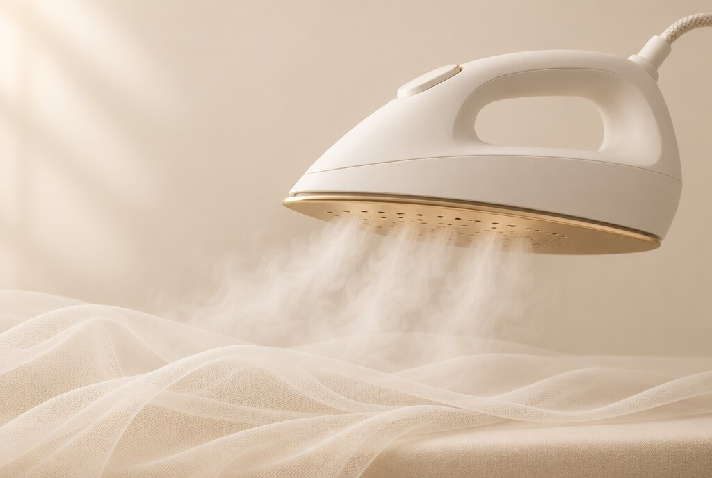
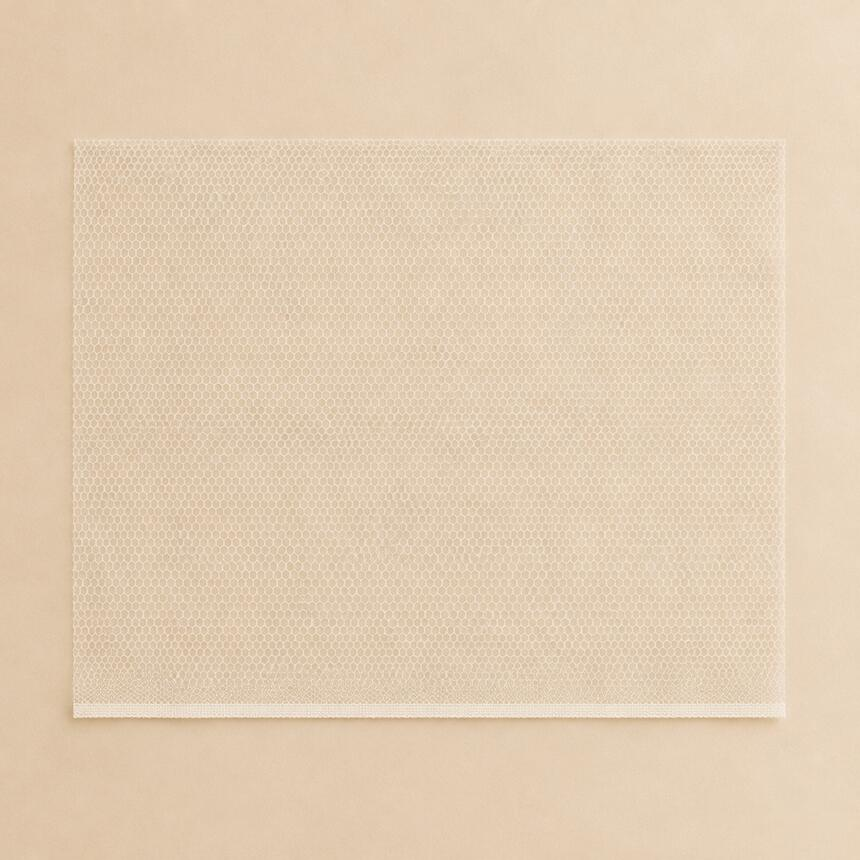
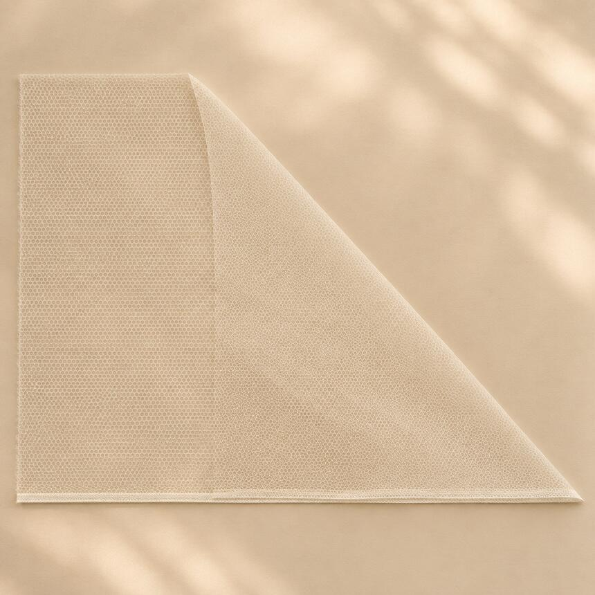
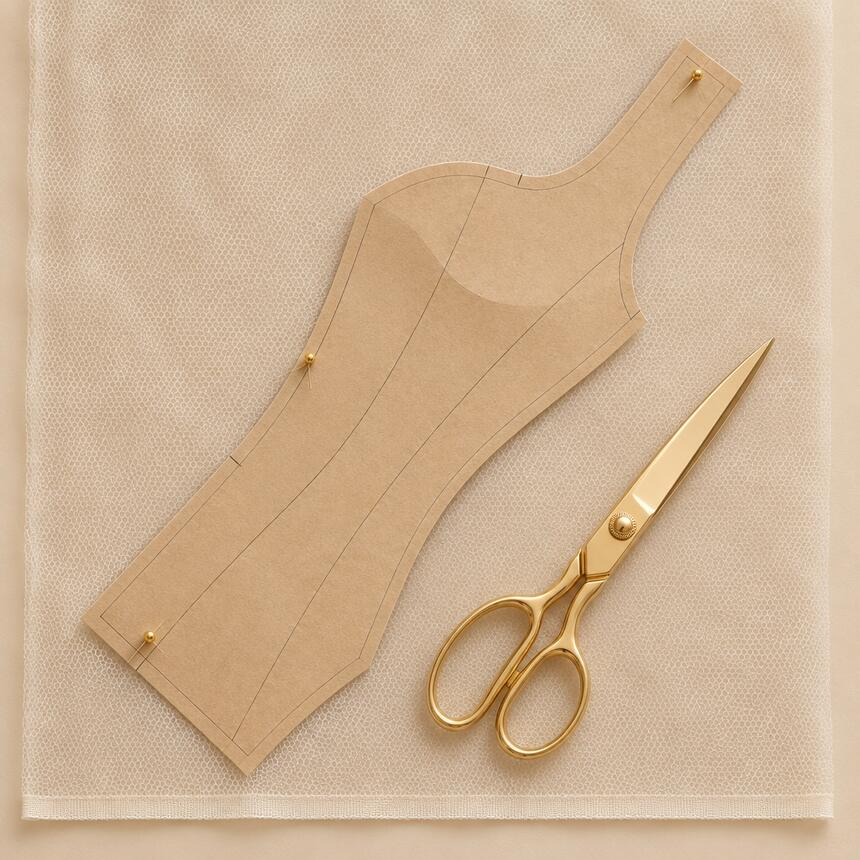

دليل لوفينا
التعامل مع التل
تل لوفينا نايلون ١٠٠٪، ولهذا هو قوي ومقاوم للقطع. قاعدتان فقط ليخرج بين يديك كما يليق به.
تحميل الدليل PDF01
الكي
بالبخار، لا بلسعة المكواة.

يتحمل التل البخار بكل درجاته ويتحمل الحرارة، لكنه لا يتحمل لسعة كفة المكواة. هكذا تُعامل خامات النايلون: الفرد بالبخار، لا بحرارة الكفة.
الصحيح
- ✓اخفض حرارة الكفة نفسها.
- ✓اعتمد على البخار في فرد التل.
تجنّب
- ✕كفة ساخنة تلسع التل.
- ✕الاعتماد على حرارة المكواة بدل بخارها.
02
قص الكورساج
على البورسل، بزاوية ٤٥ درجة.
في القص العرضي تكون ليكرة التل عالية. لكورساج لا يمط، تشده براحتك ويمنحك الشكل المضبوط، ألغِ الليكرة تماماً: طبّق القماش على البورسل (طرف القماش)، فتظهر لك زاوية قص جديدة، ٤٥ درجة. هذه هي الزاوية المضبوطة.

01تجنّب القص العرضي
الليكرة فيه عالية.

02طبّق القماش على البورسل
تظهر زاوية قص جديدة.

03قص على زاوية ٤٥ درجة
الزاوية المضبوطة للكورساج.
النتيجة: كورساج فِت، بلا ليكرة، يحفظ شكله مهما شددته.
لأي استفسار عن التعامل مع التل